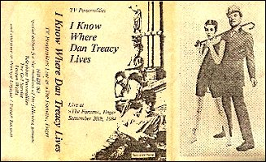

1985 - HWDS001 - MC
Songs:
King And Country
Look Back In Anger
Silly Girl
A Picture Of Dorian Gray
Someone To Share My Life With
Geoffrey Ingram
When God Snaps His Fingers
If I Could Write Poetry
When Emily Cries
I Know Where Syd Barret Lives
Three Wishes
This Angry Silence
A Day In Heaven
Medley
I'm Waiting For The Man (Reed)
Hang On Sloopy (Russell / Farrell)
Louie Louie (Berry)
Sister Ray (Cale / Morrison / Reed / Tucker)
White Light / White Heat (Reed)
Run Run Run (Reed)
I Can See For Miles (Townshend)
Day Tripper (Lennon / McCartney)
She Loves You (Lennon / McCartney)
Helter Skelter (Lennon / McCartney)
You Really Got Me (Davies)
All Day And All Of The Night (Davies)
I Can't Explain (Townshend)
Substitute (Townshend)
The Kids Are Alright (Townshend)
See My Friends (Davies)
Whatcha Gonna Do About It (Samwell / Potter)
White Rabbitt (Slick)
Set The Controls For The Heart Of The Sun (Waters)
Interstellar Overdrive (Barrett / Mason / Waters / Wright)
Silver Machine (Calvert / Macmanus)
Blue Monday (Hook / Sumner / Morris / Gilbert)
Special edition for the members of the following groups: Television
Personalities, The Go! Service, Fenton Weills and everyone at Principe Logique
/ Pastell Records. |